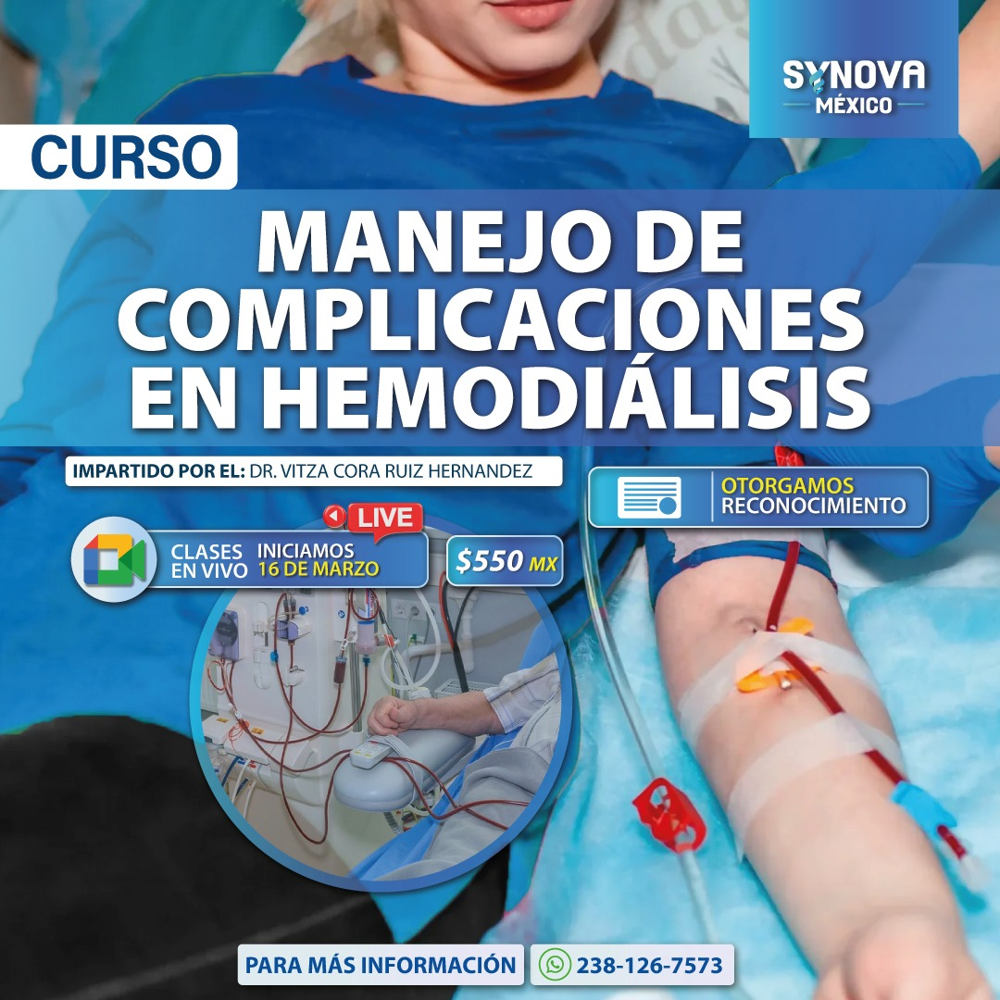

Enfermería clínica
Accesos vasculares y cuidados integrales
Actualización práctica para manejo seguro, prevención de complicaciones y seguimiento del paciente.
Ver cursoExplora la oferta académica de SYNOVA MÉXICO y encuentra programas diseñados para actualizar tus conocimientos, reforzar tu práctica clínica y acompañarte con una experiencia clara, profesional y confiable.
Actualización práctica para manejo seguro, prevención de complicaciones y seguimiento del paciente.
Ver curso
Selección, aplicación y criterios clínicos para mejorar la cicatrización y el abordaje terapéutico.
Ver cursoProgramas con enfoque aplicado para fortalecer competencias en escenarios reales de atención sanitaria.
Ver curso
Capacitación orientada a respuesta oportuna, coordinación clínica y seguridad materna.
Ver cursoActualización sobre identificación, riesgos, estabilización y seguimiento del paciente obstétrico crítico.
Ver curso
Enfoque integral sobre protocolos, monitoreo clínico y atención segura en terapia sustitutiva renal.
Ver curso
Técnicas y buenas prácticas para valoración, instalación y mantenimiento de accesos en pacientes.
Ver curso
Evaluación clínica, clasificación y estrategias terapéuticas para heridas agudas y complejas.
Ver curso
Abordaje clínico basado en prevención, tratamiento y continuidad asistencial centrada en el paciente.
Ver cursoCapacitación clínica enfocada en valoración, intervención y manejo seguro en población pediátrica.
Ver curso
Prevención, diagnóstico y tratamiento oportuno para reducir riesgos y mejorar resultados clínicos.
Ver curso
Procesos esenciales para control de infecciones, trazabilidad y cumplimiento operativo en instituciones de salud.
Ver curso
Módulos prácticos para reforzar habilidades, precisión operativa y calidad en la atención.
Ver curso
Panorama actualizado sobre bases clínicas, aplicaciones y tendencias en medicina regenerativa.
Ver curso
Manejo integral del paciente con traqueostomía, vigilancia clínica y prevención de eventos adversos.
Ver curso
Protocolos prácticos para valoración, limpieza, cobertura y evolución terapéutica de lesiones.
Ver curso
Clasificación oportuna del paciente para priorizar atención, optimizar recursos y mejorar el flujo clínico.
Ver curso